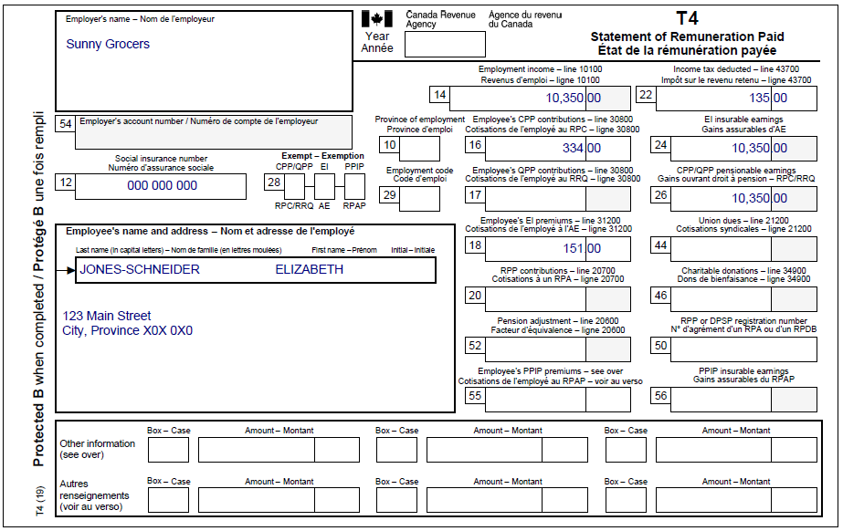
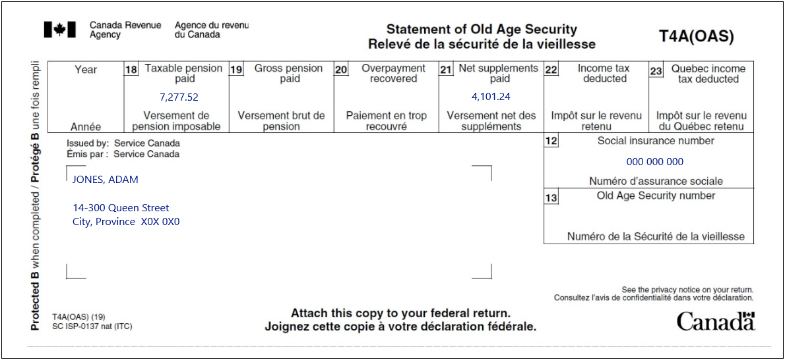
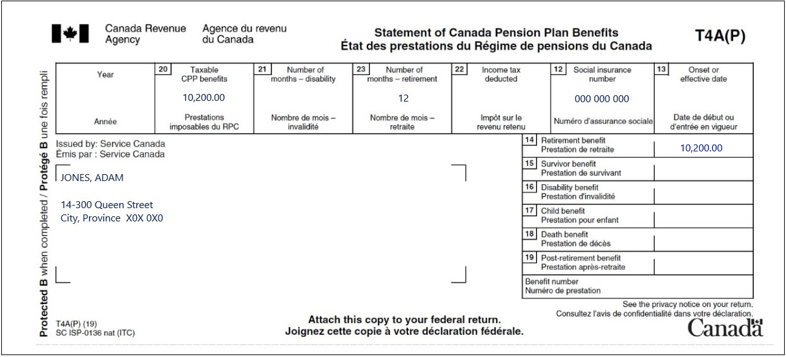
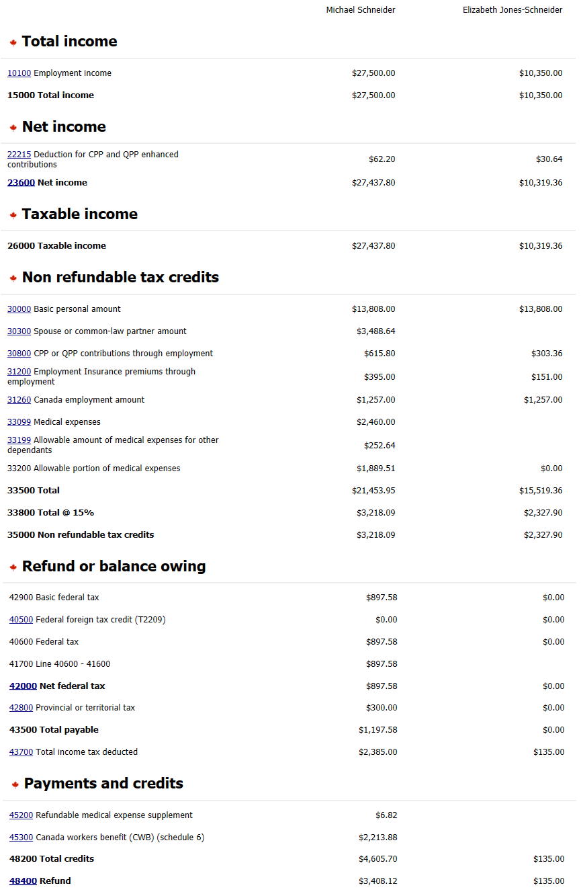

Claiming medical expenses
Pre-test question
That's correct
Individuals can claim eligible medical expenses they paid for in any 12-month period ending in the tax year they’re filing for, if they were never claimed in prior years.
Sorry, that's incorrect
Individuals can claim eligible medical expenses they paid for in any 12-month period ending in the tax year they’re filing for, if they were never claimed in prior years.
Instructions
- Open the UFile CVITP software
- Review the background information and slips required (tax slips, receipts, etc.)
- Enter all the necessary information into the required sections of UFile
- Once completed, compare your results with the solution provided
- Check out the takeaway points at the end
Background information
Situation
Michael Schneider and Elizabeth Jones-Schneider are married and live with their son, Jack. They also support Elizabeth's father, Adam Jones, who lives in a low-income housing apartment. Michael works for the XYZ Inc. company and Elizabeth has a part-time job as a store clerk at Sunny Grocers. Their son, Jack, has no income to report and Elizabeth's father, who is widowed, receives Canada Pension Plan benefits as well as Old Age Security payments. Mr. Schneider has provided you with all of his slips and medical receipts. Although you are expected to only transmit the returns for Michael and Elizabeth, you are still required to provide complete information for Adam when completing their tax returns.
Identification information
| Name | Pierre Knowlton |
|---|---|
| Social insurance number (SIN) | 000 000 000 |
| Address | 123 Main Street City, Province X0X 0X0 |
| Date of birth | September 25, 1971 |
| Marital status | Married to: Elizabeth Jones-Schneider SIN: 000 000 000 DOB: July 17, 1975 |
| Dependant 1 | Jack Schneider |
| Dependant 2 | Adam Jones |
Medical receipts provided
Adam:
- $1,500.00 – 2021-12-02 – Hearing aid – the receipt shows: 80% was reimbursed by a medical insurance plan; the amount was not claimed on the 2021 return
- $600.00 – 2022-11-21 – Dental services – fillings and routine cleanings; no amount was reimbursed
Jack:
- $3,500.00 – 2022-03-12 – Orthodontic braces – receipt shows: $2,000 reimbursed by a medical insurance plan
- $350.00 – 2021-12-29 – Prescription eyeglasses – receipt shows: $200 was reimbursed by a medical insurance plan; the amount was not claimed on the 2021 return
Elizabeth:
- $550.00 – 2022-05-06 – Prescription contact lenses – receipt shows: $200 was reimbursed by a medical insurance plan
- $300.00 – 2022-05-23 – Prescription for Vitamin B12 for Elizabeth's anemia – a receipt shows: 80% was reimbursed by a medical insurance plan
Michael:
- $800.00 – 2022-06-11 – Prescription drugs – receipt shows: 80% was reimbursed by a medical insurance plan
Slips required
T4 – Statement of Remuneration Paid for Michael Schneider (XYZ Inc.)
Text version
T4 – Statement of Remuneration PaidProtected B
Employer’s name: XYZ Inc.
Employee’s name and address:
Last name: Schneider
First name: Michael
123 Main Street
City, Province X0X 0X0
Box 12: Social insurance number: 000 000 000
Box 14: Employment income – line 10100: 27,500.00
Box 16: Employee’s CPP contributions – line 30800: 678.00
Box 18: Employee’s EI premiums – line 31200: 395.00
Box 22: Income tax deducted – line 43700: 2,385.00
Box 24: EI insurable earnings: 27,500.00
Box 26: CPP/QPP pensionable earnings: 27,500.00
T4 – Statement of Remuneration Paid for Elizabeth Jones-Schneider (Sunny Grocers)
Text version
T4 – Statement of Remuneration PaidProtected B
Employer’s name: Sunny Grocers
Employee’s name and address:
Last name: Jones-Schneider
First name: Elizabeth
123 Main Street
City, Province X0X 0X0
Box 12: Social insurance number: 000 000 000
Box 14: Employment income – line 10100: 10,350.00
Box 16: Employee’s CPP contributions – line 30800: 334.00
Box 18: Employee’s EI premiums – line 31200: 151.00
Box 22: Income tax deducted – line 43700: 135.00
Box 24: EI insurable earnings: 10,350.00
Box 26: CPP/QPP pensionable earnings: 10,350.00
T4A (OAS) – Statement of Old Age Security for Adam Jones
Text version
T4A (OAS) – Statement of Old Age SecurityProtected B
Issued by: Service Canada
Jones, Adam
14-300 Queen Street
City, Province X0X 0X0
Box 18: Taxable pension paid: 7,277.52
Box 21: Net supplements paid: 4,101.24
Box 12: Social insurance number: 000 000 000
T4A(P) – Statement of Canada Pension Plan Benefits for Adam Jones
Text version
T4A(P) – Statement of Canada Pension Plan BenefitsProtected B
Issued by: Service Canada
Jones, Adam
14-300 Queen Street
City, Province X0X 0X0
Box 20: Taxable CPP benefits: 10,200.00
Box 23: Number of months – retirement: 12
Box 12: Social insurance number: 000 000 000
Box 14: Retirement benefit: 10,200.00
Review your results
Text version
Michael Schneider
Total income
10100 Employment income: $27,500.00
15000 Total income: $27,500.00
Net income
22215 Deduction for CPP and QPP enhanced contributions: $62.20
23600 Net income: $27,437.80
Taxable income
26000 Taxable income: $27,437.80
Non refundable tax credits
30000 Basic personal amount: $13,808.00
30300 Spouse or common-law partner amount: $3,488.64
30800 CPP or QPP contributions through employment: $615.80
31200 Employment Insurance premiums through employment: $395.00
31260 Canada employment amount: $1,257.00
33099 Medical expenses: $2,460.00
33199 Allowable amount of medical expenses for other dependants: $252.64
33200 Allowable portion of medical expenses: $1,889.51
33500 Total: $21,453.95
33800 Total @ 15%: $3,218.09
35000 Non refundable tax credits: $3,218.09
Refund or balance owing
42900 Basic federal tax: $897.58
40500 Federal foreign tax credit (T2209): $0.00
40600 Federal tax: $897.58
41700 Line 40600 - 41600: $897.58
42000 Net federal tax: $897.58
42800 Provincial or territorial tax: $300.00
43500 Total payable: $1,197.58
43700 Total income tax deducted: $2,385.00
Payments and credits
45200 Refundable medical expenses supplement: $6.82
45300 Canada workers benefit (CWB) (schedule 6): $2,213.88
48200 Total credits: $4,605.70
48400 Refund: $3,408.12
Elizabeth Schneider
Total income
10100 Employment income: $10,350.00
15000 Total income: $10,350.00
Net income
22215 Deduction for enhanced CPP and QPP enhanced contributions: $30.64
23600 Net income: $10,319.36
Taxable income
26000 Taxable income: $10,319.36
Non refundable tax credits
30000 Basic personal amount: $13,808.00
30300 Spouse or common-law partner amount:
30800 CPP or QPP contributions through employment: $303.36
31200 Employment Insurance premiums through employment: $151.00
31260 Canada employment amount: $1,257.00
33099 Medical expenses:
33199 Allowable amount of medical expenses for other dependants:
33200 Allowable portion of medical expenses: $0.00
33500 Total: $15,519.36
33800 Total @ 15%: $2,327.90
35000 Non refundable tax credits: $2,327.90
Refund or balance owing
42900 Basic federal tax: $0.00
40500 Federal foreign tax credit (T2209): $0.00
40600 Federal tax: $0.00
41700 Line 40600 - 41600:
42000 Net federal tax: $0.00
42800 Provincial or territorial tax: $0.00
43500 Total payable: $0.00
43700 Total income tax deducted: $135.00
Payments and credits
45200 Refundable medical expense supplement:
45300 Canada workers benefit (CWB) (schedule 6):
48200 Total credits: $135.00
48400 Refund: $135.00
Takeaway points
Steps to follow
- Review their background information, the required slips and medical receipts
- Verify the Details of medical expenses on Canada.ca
- Enter the eligible medical expenses in the profile of the person who incurred them
- For Michael and Elizabeth, in the Interview setup, check the box next to Medical expenses, disability, caregiver in the Common tax deductions section
- For Jack and Adam, click Medical and disability in the left side menu
- It is not necessary to enter each medical receipt individually; enter See list in the description and indicate the total amount of eligible medical expenses
In this case, although amounts paid for vitamins are generally not eligible medical expenses, vitamin B12, when prescribed by a health care professional, is considered eligible.
Individuals can claim eligible medical expenses paid in any 12-month period ending in the year the individual is filing their return for. As such, in this scenario, the medical receipts paid in December of 2021 can be claimed on the 2022 return since they were not previously claimed.
The eligible medical expenses claimed must be reduced by any amount that has been reimbursed.
UFile has determined it is more beneficial to claim all the medical expenses for the family in Michael’s tax return. Michael is eligible to claim the medical expenses paid for Adam, since Adam is his spouse's father and is dependent on them for support, even though he does not live with them.
Because Michael earns a modest working income, and is claiming a large amount of medical expenses for his family, he is eligible for the refundable medical expense supplement (line 45200). UFile will automatically calculate and claim the amount on line 45200.